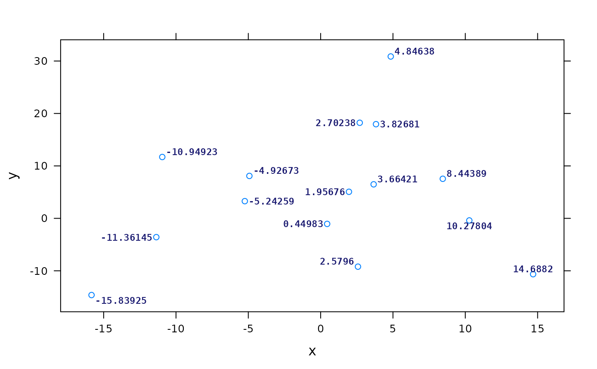
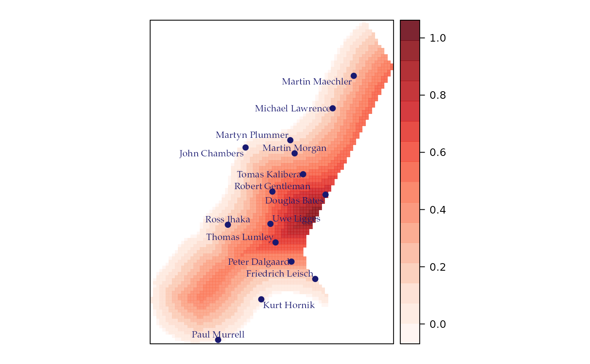

pointLabelLattice.RdUse optimization routines to find good locations for point labels without overlaps.
panel.pointLabel(x, y = NULL, labels = seq(along = x), method = c("SANN", "GA"), allowSmallOverlap = FALSE, col = add.text$col, alpha = add.text$alpha, cex = add.text$cex, lineheight = add.text$lineheight, font = add.text$font, fontfamily = add.text$fontfamily, fontface = add.text$fontface, fill='transparent', ...) sp.pointLabel(object, labels, ...)
| object | A |
|---|---|
| x, y | coordinates for the point labels. See
|
| labels | a character vector or expression. |
| method | the optimization method, either SANN for simulated annealing (the default) or GA for a genetic algorithm. |
| allowSmallOverlap | logical; if TRUE, labels are allowed a small overlap. The overlap allowed is 2% of the diagonal distance of the plot area. |
| col, alpha, cex, lineheight, font, fontfamily, fontface, fill | Graphical arguments. See gpar for details |
| ... | Additional arguments (currently not processed). |
Tom Short wrote pointLabel for base
graphics. Oscar Perpiñán Lamigueiro modified this function for
lattice and spplot.
n <- 15 x <- rnorm(n)*10 y <- rnorm(n)*10 labels <- as.character(round(x, 5)) myTheme <- list(add.text=list( cex=0.7, col='midnightblue', fontface=2, fontfamily='mono')) library(lattice) xyplot(y~x, labels=labels, par.settings=myTheme, panel=function(x, y, labels, ...){ panel.xyplot(x, y, ...) panel.pointLabel(x, y, labels=labels, ...) })data(meuse.grid) coordinates(meuse.grid) = ~x+y proj4string(meuse.grid) <- CRS("+init=epsg:28992") gridded(meuse.grid) = TRUE library(RColorBrewer) myCols <- adjustcolor(colorRampPalette(brewer.pal(n=9, 'Reds'))(100), .85) pts <- spsample(meuse.grid, n=15, type="random") Rauthors <- readLines(file.path(R.home("doc"), "AUTHORS"))[9:28] someAuthors <- Rauthors[seq_along(pts)] sl1 <- list('sp.points', pts, pch=19, cex=.8, col='midnightblue') sl2 <- list('sp.pointLabel', pts, label=someAuthors, cex=0.7, col='midnightblue', fontfamily='Palatino') spplot(meuse.grid["dist"], col.regions=myCols, sp.layout=list(sl1, sl2))